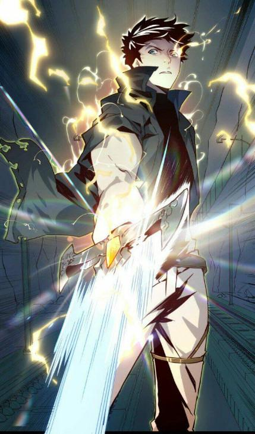

Thời gian thấm thoát trôi qua, đón mùa phượng nở thứ 12 trong cuộc đời học sinh với tâm trạng lẫn lộn vui buồn, nhớ nhung, tiếc nuối… Vài tuần nữa cuộc thi tốt nghiệp sẽ bắt đầu, kết thúc chuỗi những năm học trò vui vẻ, bắt đầu cuộc đời mới, một trang sách mới cho mỗi cô cậu ở đây.
Dương đang ngồi viết vài dòng lưu bút cho các bạn trong lớp ở chiếc ghế đá quen thuộc.
Một chiếc xe quân đội đang mở còi hú vang lao nhanh trên đường rồi dừng trước cổng trường, chú bảo vệ nhanh chân mở cổng, chiếc xe chạy vào trong sân trường trước sự ngạc nhiên của nhiều học sinh trong sân, trên lầu nhiều nhóm tụ lại nhìn xuống, có người mở điện thoại quay.

Dừng lại ngay cạnh ghế đá Dương đang ngồi, bước xuống xe là sĩ quan quân đội được vũ trang từ đầu đến chân, anh nhanh nhẹn bước vòng qua mở cửa cho sếp mình. Huân nhìn quanh rồi đi ra, anh tiến thẳng lại chỗ Dương. Dương cũng há hốc mồm thì ra chiếc xe quân đội này chạy vào đây là vì cậu.
Dương vừa ngượng vừa cười: “Chú Huân, chú chơi lớn quá đó, đi xe quân đội vô đây, còn hú còi nữa chứ, làm thế con ngại với đám bạn chết mất”
Huân: “Cậu nghĩ xe quân đội bình thường được hú còi chạy đi như thế à, lên xe đi, có việc rồi”
Dương ngơ ngác: “Chú… còn vài tuần nữa con thi tốt nghiệp rồi, con bảo để con thi xong đã mà”
Huân trầm giọng: “Việc liên quan tới tập đoàn Vin – Shield, lên xe nhanh đi”
Dương vừa nghe tên tập đoàn đó cậu đã nổi hết da gà bật dậy, đi nhanh vào xe. Chiếc xe quân đội hú còi rồi chạy vút ra khỏi trường.
Trên xe Dương nôn nóng hỏi Huân: “Chú, có việc gì vậy, chú mau nói đi”
Huân: “Tập đoàn Vin – Shield ở thế giới song song và thế giới này đều có, vì thế sau câu chuyện của cậu, tôi và anh Mạnh đã lập tức điều tra về tập đoàn này, ở trụ sở chính V – S khu vực Trung Đông chúng tôi đã phát hiện ra việc họ đang nghiên cứu và thử nghiệm loại virut mà cậu kể ở thế giới kia”
Dương: “Hả… trời ơi… vậy là do em nên mới có chuyện này hả”
Huân: “Không, tập đoàn này được thành lập từ khi cậu còn chưa được sinh ra, chuyện cậu không liên quan, nhưng nhờ chuyện của cậu đã cảnh báo cho chúng ta việc đại dịch zombie là chuyện không sớm thì muộn sẽ xảy ra, chỉ là ở thế giới chúng ta chưa bắt đầu thôi”
Dương: “Vậy chúng ta phải mau chóng ngăn chặn nó, không thể để nó xảy ra được”
Huân: “Dĩ nhiên, các nước đã mau chóng họp bàn và tuyển 1 đội đặc chủng đi triệt hạ căn cứ này, đội trưởng là anh Mạnh, và cậu là người có kinh nghiệm nhất nên không thể không có mặt trong đội”
Dương: “Cả 1 căn cứ thí nghiệm, còn có lính đánh thuê phòng thủ đó, sao các nước không cho quân đội vào cuộc mà lại để có 1 nhóm đi?”
Huân: “Chúng ta đang ở trong tối, nếu điều quân sẽ đánh động chúng, có thể chúng sẽ tung virus ra trước, lúc đó sẽ là đại nạn, chúng ta phải âm thầm tấn công và phá hủy căn cứ này trong yên lặng. Mà cậu yên tâm, quân đội các nước cũng đã lường trước tình huống đại dịch nổ ra, và cũng có quân hỗ trợ chúng ta ngay lập tức, chúng ta chỉ là quân tiên phong thôi, nhưng nguy hiểm nhất là virut, đừng để chúng kịp tung ra, vì vậy thành hay bại là ở đội tiên phong”
Dương bắt đầu run và hồi hộp: “Anh à, chuyện thế giới khác bị sẵn rồi em mới được đưa vào, còn chuyện này liên quan đến hàng tỷ người đó, em không đủ khả năng đâu”
Huân: “Cậu nghĩ ai trong chúng ta hiểu về kết cấu bên trong căn cứ dưới lòng đất của tập đoàn đó nhất, cậu nghĩ ai có kinh nghiệm chống với zombie và các quái vật biến dị mà bọn chúng đang thí nghiệm trong đó nhất. Cậu nghĩ ai mà tôi và anh Mạnh có thể tin tưởng đưa vào đội nhất?”
Dương: “Thôi đủ rồi, con hiểu rồi… nhưng mà chuyện này… trời ơi”
Dương vò đầu bứt tóc: “Không gian trong nhẫn không còn, kỹ năng còn 2 cái, không có phục hồi, không có vũ khí khảm tinh hạch… AAAAA, chú Huân, mau mau quay xe về nhà mẹ con, con đi lấy vũ khí đã”
Chiếc xe mau chóng quay lại biệt thự nhà của Thành – Thu. Dương phóng nhanh vào nhà, đặt tay lên mở cửa căn phòng bí mật rồi gôm toàn bộ vũ khí mà mọi người cất ở đây rồi vác ra.
Thu thấy Dương đang rất vội, là linh cảm của người mẹ có chuyện gì đó chẳng lành cô lao ra: “Dương, con về lúc nào thế, con… con mang vũ khí đi đâu thế?”
Dương: “Con gấp lắm, con sẽ giải thích sau…”
Thu: “Dương, con không nói mẹ không cho con đi đâu”
Huân: “Chị, chị yên tâm, Dương đi với em”
Thu nắm áo Huân trừng mắt: “Cậu là cái gì?”
Huân: “Chị à… việc này rất quan trọng, em sẽ cho lính ở lại giải thích với chị, tụi em chỉ cầu sự giúp đỡ của Dương lần này thôi”
Thu: “Cậu phải bảo vệ nó bằng cả mạng sống của mình, nếu nó có mệnh hệ gì thì tôi là người tìm cậu đầu tiên”
Huân và Dương mang vũ khí ra khỏi nhà thì trực thăng đã bay luôn đến để đón họ. Chiếc trực thăng mau chóng đưa ra sân bay rồi lên máy bay, bay qua Trung Đông.
Trên máy bay Dương nhanh chóng lấy vũ khí ra phân chia cho mọi người trong đội.
(Tiếng anh) Mark: “Hey you, làm quen nhau đã, làm gì mà vội đưa súng ống thế, ở đây ai cũng có mà”
(Tiếng anh) Huân: “Đây là vũ khí chuyên dụng để chống zombie và quái vật biến dị”
(Tiếng anh) Dương: “Chào mọi người, em là Dương”
(Tiếng anh) Taehyung: “Chào, tôi là Taehyung, tôi là kỹ thuật viên máy tính và công nghệ, nhìn cậu trẻ thật đấy, đẹp trai nữa cậu chuyên mảng nào”
(Tiếng anh) Dương: “Dạ… dạ em là học sinh”
(Tiếng anh) Shasa: “What… tôi không nghe nhầm chứ?”
(Tiếng anh) Huân: “Cậu ấy là giỏi hơn mọi ngưỡi nghĩ đó, làm quen nhau đi”
(Tiếng anh) Carlos: “Chào, tôi là lính bắn tỉa, rất vui được làm quen mọi người”
Mọi người sau màn chào hỏi thì được ông Mạnh phổ biến kế hoạch và vào thế sẵn sàng.
Ông Mạnh căn dặn thêm lời cuối.
(Tiếng anh) Mạnh: “Chú ý kiểm tra lại camera trước ngực, bộ đàm, tôi sẽ giám sát và chỉ huy trực tiếp trận này, nhớ lợi thế chúng ta là bất ngờ. Phải nhanh và chuẩn xác”
“YES SIR”
Phần đuôi máy bay mở ra, tất cả mau chóng nhảy xuống. Dương thì ôm chặt bám vào Huân.
Huân: “Lần đầu nhảy dù phải không, cứ yên tâm giao cho anh”
Mọi người đáp vào giữa hoang mạc rồi tập kết toàn đội xem định vị và mau chóng di chuyển. Đến một nhà máy bỏ hoang, xung quanh là 1 dãy hàng rào lưới lỏng lẻo, trên mỏm đá cao Huân cẩn thận quan sát.
(Tiếng anh) Carlos: “Nhà máy bỏ hoang nhìn khá sơ sài, nhưng rất nhiều lính đánh thuê đang ẩn nấp canh gác, chính là chỗ này rồi”
(Tiếng anh) Mark: “Quan trọng là làm sao tiếp cận mà không bị phát hiện”
(Tiếng anh) Shasa: “Bên trái hướng 9 giờ, gần vách đá có nhiều bụi cỏ khô, chúng ta cặp theo sườn núi rồi lợi dụng các bụi cỏ tiếp cận”
(Tiếng anh) Huân: “Đi thôi”
Dương cảm giác mình chả có lợi ích gì, cậu hoàn toàn chả có kinh nghiệm tác chiến thế này, cậu chỉ có sức mạnh hơn họ một chút, cậu cố gắng mang vác đồ hỗ trợ mọi người.
Carlos mau chóng lắp nòng giảm thanh vào súng nhắm rồi hạ các mục tiêu đang ẩn nấp. Toàn đội dần tiến vào trong, đi tới đâu đám lính bị gạ gục tới đó.
Bên trong nhà máy bỏ hoang.
Huân: “Đội Sói Xám gọi chỉ huy, đã vào được nhà máy, chuẩn bị tiếng vào tầng hầm”
Mạnh: “Được rồi, mau vào, cậu Huân nếu xuống sâu lòng đất mất liên lạc thì cậu là người chỉ huy, tùy cơ ứng biến”
Huân: “Rõ”
Theo hành lang dài đi xuống tầng hầm, lối kiến trúc này khá quen thuộc với Dương, nó khá giống với kiến trúc ở căn cứ lòng đất của Vin – Future, chỉ là ở đây quy mô lớn hơn và các hệ thống hiện đại, chắc chắn hơn.
Mọi người lẻn vào khu vực chính thì tiếng còi báo động bị xâm nhập của căn cứ lòng đất này hú lên. Đội bảo vệ ở đây cũng được trang bị vũ trang đến tận răng, cùng đám lính đánh thuê ùa ra chống trả.
Huân: “Sói Xám cấp báo, chúng tôi đã bị phát hiện, lập tức cho quân đội bên ngoài tấn công, alo… ALO… chết tiệt… ALO”
(Tiếng anh) Huân: “Toàn đội chú ý, đã mất liên lạc với chỉ huy, mọi người nghe lệnh của tôi. Mark và Shasa mở đường hướng về phòng thí nghiệm”
Tuy bộ đàm mất liên lạc bên ngoài, nhưng hình ảnh trên camera trước ngực của họ vẫn có hình ảnh rất rõ. Vài phút trước toàn bộ sự việc làm của tập đoàn Vin – Shield đã được cống bố trên toàn thế giới, dân chúng khắp nơi phẫn nộ. Hàng loạt các căn cứ khác của các tổ chức này đã bị quân đội các nước ập vào tấn công. Chỉ có căn cứ khu vực Trung Đông này nằm trong đang trong chiến sự nên việc điều quân hơi khó khăn. Quân đội vào được thì vì địa hình và đồi núi hoang mạc phức tạp nên chưa thể tiếp cận ngay được. Ông Mạnh chỉ huy trận này là người đang lo lắng nhất cho những anh em của mình bên trong. Không biết từ đâu rò rỉ thông tin mà hàng loạt các nhà đài, tin tức đã đưa tin lên làm ảnh hưởng sự bí mật của hoạt động lần này. Video của nhóm Huân trong trận chiến cũng đang được phát trực tiếp trên toàn thế giới. Lúc cả nhóm bị phát hiện và rơi vào nguy hiểm, cả thế giới mọi người như nín thở theo dõi màn hình.
Ông Mạnh: “Má nó… bên phía nào đã để lọt thông tin ra ngoài, còn cả hình ảnh trực tiếp nữa, cắt ngay cho tôi”
Anh quân nhân: “Sếp, cái này là từ liên hiệp các nước rồi, họ đã công khai tất cả trước người dân, chúng ta đủ quyền tắt chương trình trực tiếp này”
Ông Mạnh: “Má bọn ngu, chỉ biết hám lợi, dùng cơ hội này mua chuộc lòng dân, má… tôi tức quá mà… mau cho đoàn đi nhanh đi”
Anh quân nhân: “Dạ sếp chúng ta gặp cát lún, các xe cơ giới hạng nặng đều bị kẹt lại, đang khắc phục”
Ông Mạnh: “Xe này bị dính lại thì bỏ, ai tiến tới được cứ tiến, một người cũng phải đi. Chuyện này ảnh hưởng đến cả nền văn minh nhân loại”
…
Trên khắp thế giới, từ sân vận động, trường học, các quảng trường, trên phố, trong nhà, quán ăn, quán cà phê mọi người đều đang dõi theo diễn biến cuộc chiên bên trong.
Nhóm Huân đã phá được vòng vây, tiến sâu vào bên trong trung tâm căn cứ dưới lòng đất. Dương và Carlos chọn một vị trí cao nhanh chóng leo lên để bắn hỗ trợ. Các quái vật biến dị, zombie tiến hóa được thả ra. Kèm theo đó là đội quân bảo vệ và lính đánh thuê chống trả dữ dội.
(Tiếng anh) Mark: “AAAA…”
Dưới mưa đạn và lửa khói.
(Tiếng anh) Huân: “Mark… Mark… vị trí, vị trí anh đã đi tới đâu… Mark… Mark…” “Shasa… cậu và nhóm đang ở tầng mấy”
(Tiếng anh) Shasa: “B13, chúng tôi cũng đã bị bao vây, báo, phát hiện phòng thí nghiệm chính ở B14, cần hỗ trợ”
(Tiếng anh) Huân: “Taehyung dẫn đội đi cùng tôi, Carlos Dương bắn yểm trợ”
Từng người, rồi từng người trúng đạn ngã xuống, các đội viên các nhóm người chết, người bị thương do đạn, do quái vật.
Vào đến phòng thí nghiệm, nhóm của Shasa đã anh dũng hy sinh để mở đường cho Huân và Taehyung vào, phía sau là Dương và Carlos cầm AWM yểm trợ.
“Soẹt” “bùm…”
Một quả boom choáng nổ ngay gần Dương và Carlor. Lóa mắt, choáng váng, không nhìn thấy gì, Dương chỉ nghe được tiếng hét của Carlos vì bị trúng đạn.
“Tạch… tạch… tạch… đùng… ầm… ầm…”
Bỗng Dương thấy đau nhói ở vai trái, Dương không có kinh nghiệm, cậu cố lòm còm bò dậy thì “hự” một viên đạn khác ghim thẳng vào ngực, tuy có mặc áo chống đạn nhưng nó đau điếng và đẩy Dương văng ngược về sau. Tức ngực khó thở, gần như bất tỉnh vài giây.
(Tiếng anh) Carlos: “Dương, nằm xuống… nằm xuống…”
Carlos lấy khẩu tiểu liên ra nã liên tục vào hướng địch. Anh bò qua đập liên tục lên người Dương gọi cậu mau tỉnh dậy.
(Tiếng anh) Dương: “AAA… hộc hộc… tôi không sao, tôi không sao, anh sao rồi”
Carlos đưa trái lựu đạn và băng đạn cuối cùng của anh cho Dương rồi gục xuống, anh đã mất máu quá nhiều. Dương hét lên gọi Carlos nhưng không được, Dương lấy cây súng trên tay Carlos, cậu phải tiếp tục, Huân và Taehyung đang cần họ hỗ trợ, Dương bò đến 1 vị trí khác rồi gác súng lên thanh chắn, mở tiếp kỹ năng Nhanh Nhẹn rồi nhắm bắn liên tục, mỗi viên đạn là 1 tên bảo vệ hoặc con quái vật ngã xuống.
Dương: “… 27… 28… 29… má chúng đông quá”
Bên dưới, Huân và Taehyung đã đứng trước 1 dãy toàn các tủ inox kiên cố, với hàng loạt ống thuốc và ống bình thí nghiệm.
Huân: “Alo, Dương, em có thể thấy bên này không, chỗ này có phải là chỗ chứa loại virut đó”
Dương chỉnh tầm nhắm nhìn về phía các dãy tủ: “Đúng rồi, dãy thuốc bên phải tầng giữa, có mấy khung kim loại và kính nhìn chắc chắn đó”
Huân nhìn Teahyung gật đầu rồi cả hai cầm tiểu liên xả đạn vào các tủ thuốc. Cả hai lắp thêm vài quả mìn hẹn giờ rồi nhanh chóng rút về hướng của Dương.
Huân, Taehyung và Dương vác cả Carlos rồi rút ra. Phía sau mấy nhà khoa học cũng đã điên lên khi các phòng thí nghiệm, virut của họ bị phá hủy, họ nhặt vũ khí của các bảo vệ và lính đánh thuê rồi bắn liên tục.
Dương trúng đạn tiếp theo là Huân, rồi Taehyung, lựu đạn, lửa cháy, nổ của các loại máy móc và các chất hóa học, khói cay xè, nồng khiến không thở được. Cả 3 người và xác của Carlos cũng đã đi ra được tới ngoài nhà máy bỏ hoang, trên người ai cũng đầy vết đạn, mảnh boom từ tay tới chân, máu me be bét.
Dương tìm được 1 chiếc Honda ATV (xe vượt địa hình 4 bánh), Dương đặt xác của Carlos lên xe rồi quay lại dùng toàn bộ thể lực và sức mạnh còn lại mở thêm kỹ năng Nhanh Nhẹn vác Taehyung lên vai, 1 bên là dìu Huân ra xe. Dương leo lên xe cột siết Teahyung đã bất tỉnh vào người mình.

Dương: “Anh Huân, mau lên xe đi…”
Huân quay lại nhìn đám bảo vệ và các nhà khoa học đã lao tới, anh hét với Dương.
Huân: “Cậu đưa họ ra trước đi rồi quay lại đón tôi”
Dương: “Không, anh bám vào đây đi, 4 người vẫn được mà, mau lên đi”
Huân: “Cậu có nghe lời tôi không, tôi là chỉ huy đó, mau đi đi, tôi còn đạn mà, bọn chúng đến rồi, không đi là chết cả đấy”
Dương đá số tăng ga, chiếc xe gầm lên bánh xoay nhiều vòng rồi lao đi trên cát. Chạy xa khỏi nhà máy bỏ hoang 1 đoạn thì đã gặp đoàn người của ông Mạnh vừa tới. Dương lập tức dừng xe giao Taehyung cho họ để cấp cứu, để xác Carlos xuống rồi quay xe.
Ở nhà máy, huân cầm tiểu liên lên bắn hết băng đạn cuối cùng rồi tay ôm vào vết thương bên hông đứng cười, miệng lầm bầm đếm ngược.
Huân: “4… 3… 2… 1… boùom”
“UỲNHHHHH…”
Huân mỉm cười lần cuối, bên dưới lòng đất một vụ nổ lớn phá nát tất cả làm đổ sụp toàn bộ nhà máy bên trên, vụ nổ còn tạo quả cầu lửa lan ra vài trăm mét xung quanh, cột khói đen nghi ngút.
Dương thì bị ông Mạnh và vài người lính ôm chặt giữ lại không cho cậu đi nữa.
Dương nước mắt nước nước mũi hét lên: “ANH HUÂN… ANH HUÂN… AAAAA”
Trên người Dương bây giờ toàn máu và mảnh boom, vết đạn. Điểm thể lực, cuối cùng cạn kiệt, kỹ năng Nhanh Nhẹn tự kết thúc. Toàn bộ cơ thể đổ gục xuống. Ông Mạnh đỡ lấy cậu rồi nhanh chóng cùng đội y tế đưa lên trực thăng đi cấp cứu.
Ở nhà, lúc Dương gục xuống người đầy máu me cũng là lúc My xỉu xuống trước màn hình, Hương, Trinh, Hoa tay chân bủn rủn cố giữ cơ thể đứng vững đến đỡ My. Bên căn biệt thự, Thu cũng không khá hơn, cô đã đứng không nổi nữa, Thành đang dìu cô rồi mở điện thoại.
Thành: “Lập tức chuẩn bị xe tới sân bay”
Các cô chú, bạn bè, người thân, và toàn bộ người đang xem trên thế giới đều không khỏi xúc động, họ lặng im, vài người bật khóc trước màn hình. Cảnh chiến tranh, súng đạn, cảnh chết chóc tàn ác, bi thương, sự hy sinh, hàng trăm nhà khoa học, hàng trăm bảo vệ, lính đánh thuê, hàng chục chiến binh chỉ còn lại 2 người trọng thương và 1 cái xác. Khung cảnh quá đau thương. Chưa biết ai thiện ai ác, ai đúng ai sai, nhưng nó quá tàn nhẫn và bi thương, ở cuộc chiến này hay bất cứ cuộc chiến nào.
Mọi người thân bạn bè mau chóng tập trung ở căn biệt thự rồi chọn lọc 1 số người mau chóng đi đến sân bay. Ở đây chiếc máy bay tư nhân của Thành cất cánh bay đến nước V – S.
Trong bóng tối bao trùm, 1 khoảng không gian vô tận. Dương nhìn vào cơ thể mình, nó hoàn toàn lành lặn, cậu đưa tay sờ vào thì không được, nó chỉ là hình bóng, hay là cậu đã chết, đây là linh hồn của cậu. Vậy chắc lát sẽ có thần chết hay sứ giả của Diêm Vương nào đó đến cậu nhỉ. Nhưng không, linh hồn Dương dần bị kéo đi, cuốn dần vào vòng xoáy của bóng tối. Dương thả lỏng người thuận theo, tuy cậu mới 18 tuổi nhưng cuộc đời cậu đã trải qua nhiều thứ mà người khác không bao giờ có được, cậu mỉm cười, không phải hối tiếc nữa…
“DƯƠNG… này tên kia, có quay lại đây không?”
Dương giật mình vì tiếng gọi, cậu quay lại nhìn, một cô gái cậu chưa từng gặp, gương mặt như thiên thần, cơ thể quyến rũ, làn da trắng hồng mịn màng, dường như không có bất cứ khuyết điểm nào từ gương mặt tới vóc dáng, sao lại có một người hoàn hảo như vậy chứ.
Dương tiến lại: “Cô lại ai?”
Cô gái: “Đoán xem… hi hi”
Dương quơ tay: “Không đoán nổi đâu, mệt lắm rồi”
Cô gái: “Haizzz… cậu nói chuyện với tôi hằng ngày đấy, chán thiệt chứ”
Dương sáng mắt ra: “Al, là mày à… ui xinh nha, mà ai bảo mày mặc bộ đồ thiếu vải thế?”
Al: “Tôi chọn đồ theo tiêu chuẩn sở thích của cậu đấy, không thích tôi đổi lại nhé”
Dương: “Thích thích chứ… hé hé, để xem nào…”
Al: “Nè, nghiêm túc đi, cậu chết rồi đấy cậu không biết à”
Dương: “Biết thì sao, mà chết còn được gặp 1 cô gái xinh đẹp và nói chuyện thế này cũng mãn nguyện rồi”
Al: “Dẽo miệng… hừ… nghe nè”
Dương ngồi xuống chóng cằm: “Òm, nói đi”
Al: “Lúc nào nói chuyện với tôi cậu cũng chả nghiêm túc gì cả, cậu không nhớ cậu còn nhiệm vụ của vị thần đó à, bây giờ cậu chết cậu có nghĩ hậu quả sau đó không?”
Dương: “Hả, tao chết là hết, là kết thúc nhiệm vụ chứ liên quan méo gì nữa”
Al: “Sai rồi, thu hồi toàn bộ và trừ 100 năm tuổi thọ, nếu cậu không có thì trừ vào người thân bạn bè đến khi đủ, cậu quên à?”
Dương: “Mẹ nó cứ… bây giờ tao còn làm gì được? Tên thần đó đâu”
Al: “Tôi đã phá hủy nhẫn và hệ thống giúp cậu, nhưng có lẽ hắn sẽ không bỏ qua đâu, sớm thôi hắn sẽ đến tìm cậu, nếu cậu không còn sống hắn sẽ trút giận lên gia đình cậu đấy”
Dương: “Sao mày lại phá hủy nhẫn và hệ thống chứ? Mày giúp được gì?”
Al: “Cắt liên lạc với vị thần, hắn sẽ nghĩ là mất kết nối như lần trước, thêm một thời gian nữa hắn mới nghi ngờ và đến đây”
Dương: “Có lý, nhưng mà có thêm thời gian thì làm gì được”
Al: “Tôi đã dùng năng lượng còn lại của nhẫn và chiết xuất được một phần của bộ xử lý của hệ thống, tôi sẽ dùng nó để dung hợp tôi và nó vào não để phục hồi lại cho cậu, nhưng còn cơ thể cậu thì phải do nghị lực và khả năng của cậu, hãy mau chóng hồi phục còn đón nhận nhiệm vụ kế của vị thần”
Dương: “Đù, vậy cũng đc luôn hả? Vậy dung hợp đi, làm bằng cách nào”
Al mỉm cười: “Thế cậu nghĩ bằng cách nào”
Dương… “Sex”
Al rút những sợi dây đang buộc giữ đồ trên áo, những đường cong hoàn mỹ dần lộ ra, đôi mắt xanh biếc, chiếc mũi cao, đôi môi trái tim mọng đỏ chúm chím quyến rũ cùng nụ cười, bờ vai thon thả theo đường cong chữ S trên cơ thể. Đôi ngực trắng tròn cân bằng hài hòa với thân hình, không to không nhỏ. Al tiến lại cởi đồ Dương ra rồi hôn. Dương chưa bao giờ thấy 1 cô gái hoàn mỹ đến từng chi tiết như vậy, Dương vuốt ve lên cơ thể cô rồi, hôn lên vú, liếm mút. Chiếc giường hiện ra khi Al dần nằm xuống. Dương cầm cu đẩy vào trong, cái lồn đó dường như được thiết kế cho Dương, nó vừa vặn se khít đến đáng kinh ngạc, cảm giác sướng ở đầu cu khó mà diễn tả. Dương chuyển mình nhấp mạnh nhiều cái.
Dương: “Al, mày không có cảm giác gì à, ít ra cũng phải rên lên 1 tí mới có hứng thú chứ”
Al: “Ờ đang tải dữ liệu… ơ… ơ… ơ… ơ…”

Dương: “Mé… tao mất mẹ nó hứng với tiếng rên đó đó, mà nhìn cơ thể mày, nó cân bằng toàn bộ ảo ảo sao đó, tới lông mi cũng đều từng sợi, nếu đếm hai bên chắc bằng nhau luôn đó. Ảo quá… có cách nào tăng cảm xúc lại không? Mày còn thuốc không?”
Al không rên nữa, trong lồn cô đang chuyển động, dòng nước tràn ra bôi trơn con cu của Dương, các cơ bên trong lồn đang dần chuyển động cuộn lấy con cu Dương rồi di chuyển lên xuống.
Dương: “AAAA… má sướng cu quá… từ từ thôi, tao bắn tinh mất”
Al: “Im và tập trung đi, tôi cần cậu mau xuất tinh mà”
Dương rùng mình rồi bắn tinh, cơ thể của Al dần biến mất hòa vào người cậu.
Dương: “Má đây là lần quan hệ mau ra nhất của tao luôn đó, Al… Al… mày đâu rồi”
Dương không nhận được trả lời, linh hồn cậu cũng dần tan biến trong bóng tối đó.
15 tiếng trôi qua, 2 phòng phẫu thuật của Taehyung và Dương các bác sĩ cũng lần lượt bước ra. Thành, Thu, Hương, My, Trinh… đang đứng trước chờ đợi.
Bác sĩ: “Anh ấy rất mạnh mẽ và kiên cường, nhưng hơn 8 viên đạn và mảnh boom to nhỏ khác nhau trên cơ thể, mất quá nhiều máu, một mảnh đạn còn ghim vào não trái, chúng tôi đã hết sức cứu chữa, nhưng hiện tại có thể tỉnh lại hay không là do nghị lực và vận may của anh ấy, chúng tôi rất tiếc khi nói điều này, nếu anh ấy có tỉnh thì có lẽ phải sống suốt đời trên giường bệnh”
Nghe lời bác sĩ xong, lần nữa My ngã xuống, Thành và mọi người cũng không kiềm được nước mắt. Chỉ có Thu là lòng vững như thạch thầm nghĩ trong đầu: {Còn sống là được}
Lát sau trong phòng chăm sóc đặc biệt, Dương nằm thở bằng máy, toàn thân bó bột, My và Hương lao đến mỗi người 1 bên thành giường khóc nức nở.
Thu tiến lại kéo Hương qua 1 bên, cô lấy trong túi ra 1 chiếc hộp, bên trong là “Kẹo Phục Hồi”. Đây là viên kẹo mà cô giữ lại. Thu đã từng cười và khinh thường nó khi nhận được, nhưng cô vẫn giữ lại, bây giờ nó cứu được mạng sống con trai cô. Thu mở máy thở ra, đặt viên kẹo vào miệng. Viên kẹo tan ra nhanh chóng hòa vào khắp cơ thể Dương. Các động mạch, cơ được phục hồi, kết nối lại. Chỗ vết thương liền lại chỉ còn vết sẹo mờ.
Dương mở mắt ra nhìn mọi người xung quanh đang mừng rỡ nước mắt ngắn dài.
Dương: “Aizzz, khóc gì chứ, con có chết đâu, ui da… uii… ui… chỗ đó còn đau đó mẹ, mình mẩy còn ê ẩm lắm”
Ông Mạnh: “Vậy thì tốt rồi, tôi sẽ mau chóng âm thầm di chuyển cậu ấy ra khỏi bệnh viện rồi mọi người đi, không thể để bác sĩ ở đây biết cậu ấy mau chóng phục hồi như thế, mọi người bình tĩnh rút ra ngoài dần đi”
Tại 1 căn nhà nhỏ với khu vườn xinh xắn của 1 đất nước xa lạ, người lính cầm trên tay 1 tấm huân chương và bộ đồ, lá cờ được xếp ngay ngắn cẩn thận. Cửa nhà mở ra là vợ, là người thân của những anh hùng đã mất. Họ không kiềm được nước mắt lấy những món đồ đó. Ông Mạnh thì trực tiếp đến nhà Huân để thông báo cho Liên và Loan. Taehyung về đất nước mình trên xe lăn, chính phủ và người dân nhiệt liệt chào đón.
Ở quê hương của Dương, tại sân bay là hàng dài các quan chức cấp cao và người dân chào đón. Thu – Thành đẩy chiếc giường của Dương lên 1 chiếc xe rồi lẳng lặng rời dòng người đi về căn biệt thự.
Về đến nhà Dương tháo mớ băng quấn đầy người ngồi dậy mệt mỏi, người cậu vẫn đau nhức vì vết thương, Thu đỡ cậu qua giường nằm nghỉ.
Thành quay qua Hương: “Em… à không con mau đi thông báo với giới truyền thông và lan tin tức là Dương đã về nước nhưng vẫn hôn mê và được điều trị tại nhà là được rồi”
Hương: “Dạ, con đi làm ngay”
My quấn quýt bên Dương.
My: “Anh… anh anh… anh có cần em điều trị đặc biệt không… hì”
Dương bật cười: “Anh còn đau lắm, thật, không di chuyển nổi đâu”
My: “Vậy… anh có thích ngắm cosplay y tá không ^^!”
Thu: “Con đừng giỡn nữa, con xuống phòng khách với mọi người đi, cô cần nói chuyện với Dương”
Dương: “Khoan đã, con cần nói với My trước”
Dương thì thầm vào tai My vài điều gì đó rồi My gật đầu mau chóng đi ra.
Thu: “Con nói gì với My thế?”
Dương: “Không quan trọng đâu mẹ, con chỉ dặn cô ấy vài thứ thôi, mẹ định nói gì với con?”
Thu: “Mẹ thấy chiếc nhẫn của con không còn nữa, việc gì đã xảy ra, nhiệm vụ còn không?”
Dương: “À chiếc nhẫn lúc hoàn thành thế giới song song là nó hết nhiệm vụ rồi, con chỉ đeo làm kỷ niệm thôi, mà lúc tham gia chiến dịch con tháo ra giờ lạc đâu mất rồi, con chả nhớ nữa”
Thu: “Còn nhiệm vụ của tên thần đó?”
Dương: “Chưa có, mẹ yên tâm đi mà, con vừa cõi chết trở về đó, cho con nghỉ tí đi”
Thu: “Con mệt lắm đúng không? Mẹ muốn nói cho con biết là, mẹ là mẹ của con, có chuyện gì thì hãy chia với mẹ, mẹ sẽ nhận và gánh cho con tất cả, có chuyện gì khó khăn hãy nhớ tới bố mẹ. Trong tương lai con có dự định gì, thì… phía sau con luôn có bố mẹ”
Dương im lặng… mỗi câu nói của Thu đều thấm thía và bao trùm nhiều hàm ý cao xa. Dương biết bố mẹ rất thương cậu, nhưng chuyện này cậu không cần người gách vác tất cả, cậu cần người chia sẻ một nửa gánh nặng cảm xúc, cần người để cậu ôm vào lòng lúc mình mệt mỏi nhất. Dương đợi mẹ đóng cửa phòng thì nằm xuống nghỉ ngơi.
My: “Heyyy… em quay lại rồi đây, em giỏi không?”
Dương: “Tốt, mau đưa cho anh, rồi đi đi”
My: “Hưuu… không thưởng em gì hả”
Dương: “Ngốc, anh thưởng sau nhé, anh nghỉ một chút đã”
My: “Em ở đây không được hả?”
Dương: “Em ở đây mới không nghỉ được á… tha cho anh vài hôm đi mà… ngoan nha…”
My: “Em chỉ muốn ở bên anh thôi mà… dạ… em biết rồi”
Đêm đó, khoảng nửa đêm, ánh sáng của chiếc đèn ngủ chợt chớp tắt, gió cuộn vào phòng, những tấm rèm cửa bị thổi tung lên. Lão già quái dị đó đã xuất hiện, với lưng cong, đôi mắt đỏ đứng nhìn Dương cười ha hả.
“Thằng nhóc, tao tưởng mày trốn mất, hóa ra là hệ thống của tao và chiếc nhẫn đó biến mất à… tốt tốt…”
Dương đã chuẩn bị mọi thứ, cậu đã sẵn sàng đối đầu với tên thần này, cậu chưa ra tay mà dò hỏi hắn xem hắn đáng phải nhận lấy kết cục này không:
“Chiếc nhẫn xong việc của nó rồi, còn nhiệm vụ cuối là gì, ông cũng mau kết thúc mọi việc đi”
“Ha ha ha… ngươi còn vội vã hơn ta đấy, gần đây ta và khán giả của ta cũng đã chán ngươi rồi, ta phải đi kiếm mục tiêu mới thôi, nhiệm vụ cuối của ngươi là hãm hiếp mẹ của ngươi, giết chết cha của ngươi và chiếm trọn tài sản của họ. Ngươi sẽ được giữ toàn bộ sức mạnh đang có, tài sản của ngươi chiếm được ta sẽ nhân nó lên gấp 10 lần, ngươi sẽ thống trị toàn thế giới này, bất cứ cô gái nào cũng là của ngươi”
Dương cười nhạt, tên gian ác này đúng là quá thâm hiểm. Dương rút từ trong chăn ra thanh kiếm dài mà My chuẩn bị, chỉ về lão già gian ác đó.
“Ha… ha… ha… tên nhóc, mi đang làm trò gì thế, đừng chọc tức ta, ngươi nghĩ thanh kiếm quèn đó của ngươi có thể làm gì được ta à… ha ha ha”
Dương: “Lão già ông sai rồi, hôm nay là ngày tàn của ông”
Dương niệm khẩu ngữ trong miệng, nhiều vết máu trên thanh kiếm được cậu viết sẵn lóe sáng rực lên. Dương dùng hết sức mạnh, và bật luôn kỹ năng Nhanh Nhẹn vừa niệm vừa chém liên tục về phía tên thần.

Dương: “ĐOẠN HỒN, TRÊN CHÉM THIÊN, DƯỚI TRẢM ĐỊA, GẶP PHẬT GIẾT PHẬT, GẶP MA GIẾT MA”
Hàng loạt lưỡi ánh sáng vụt tới chém đứt linh hồn của tên thần gian ác đó. Hắn chỉ kịp gào lên rồi linh hồn bị xé nát vụn tan vào hư vô. Thân xác hắn bị ánh sáng đó thiêu đốt không còn lại gì. Luồn sức mạnh còn lại của hắn tụ xuống đất, hình thành các viên đá nhiều màu sắc. Dương nhặt cất kỹ các viên đá đó. Dương đã kết thúc cuộc đời của vị thần gian ác đó, hắn sẽ không còn có thể hại người được nữa.
Sau lần đó, ông Mạnh được phong hàm tướng. Dương là anh hùng của thế giới, của cả dân tộc. Dương vào đội đặc biệt của ông Mạnh, tham gia các chiến dịch và phá nhiều vụ án, triệt phá nhìu tổ chức tội phạm thế giới.
Khi không có việc, cậu ở nhà bên các người vợ, đi du lịch đi chơi.
Trên đỉnh ngọn núi mà Dương từng cắm trại cùng các bạn, cậu nắm trên tay các viên đá nhiều màu sắc ném tung lên, các viên đá như có linh trí, chúng bay vút đi trải dài trên khắp đất nước. Dương đã gieo một hạt giống mới, một nguồn sức mạnh mới cho tương lai của nhân loại.
Dương cùng các cô vợ ngắm bình minh trên đỉnh núi đó, họ vui vẻ nhìn về tương lai hạnh phúc phía trước.
Vincent: Cảm ơn các bạn đã theo dõi truyện của mình đến đây.